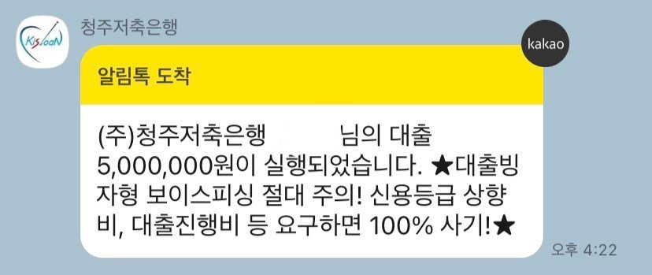

[무직자대출] 무직자 대출 성공했어요(김인숙 상담사님)
무직자에 기대출 좀 있고 만 20세여서 대출받기 힘들거라고 생각했는데 김인숙 상담사님께서 친절히 여기저기 알아봐주시고 이름 들어본 곳들 위주로 추천해주셔서 대출에 성공했습니다 !! ㅠㅠ
대부중개업체를 이용해본건 처음인데 다 상환하고 앞으로 또 대출받아야할 일이 생긴다면 이곳에서 해도 될거 같아요 제가 처음에 의심이 많아서 금융감독원 홈페이지에 등록번호를 검색해봤더니 정식업체로 등록돼 있었고 영업중이라고 뜨더군요 믿을만한 곳이 맞네요
마지막으로 이틀동안 신경 써주시고 일일이 기다려주시고 케어해주셔서 감사합니다~~
